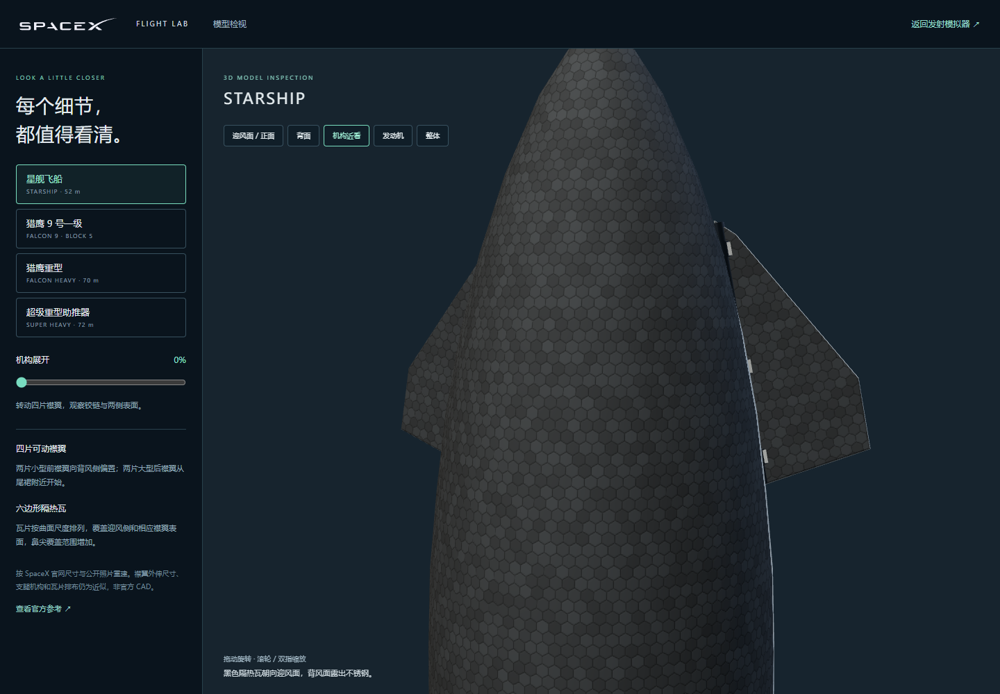
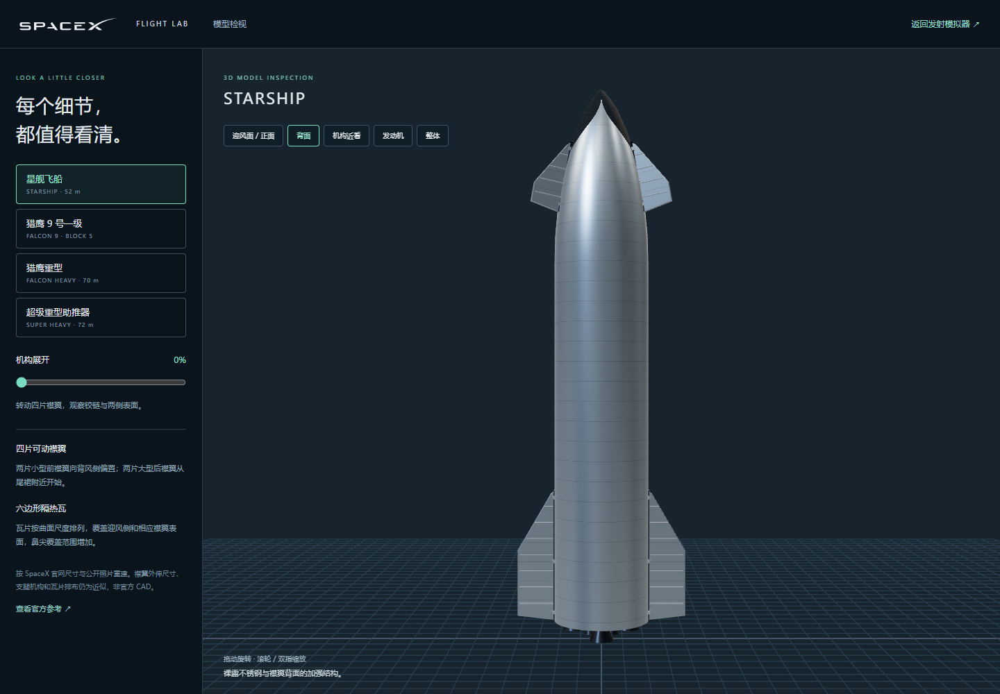
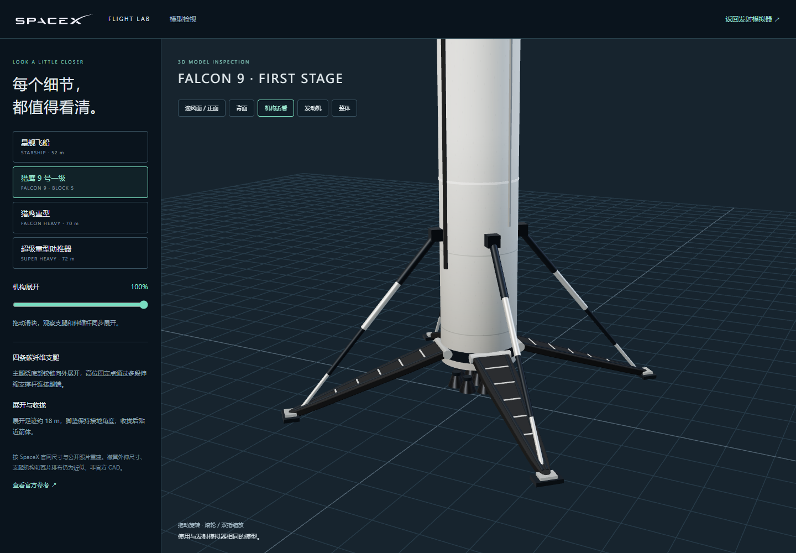
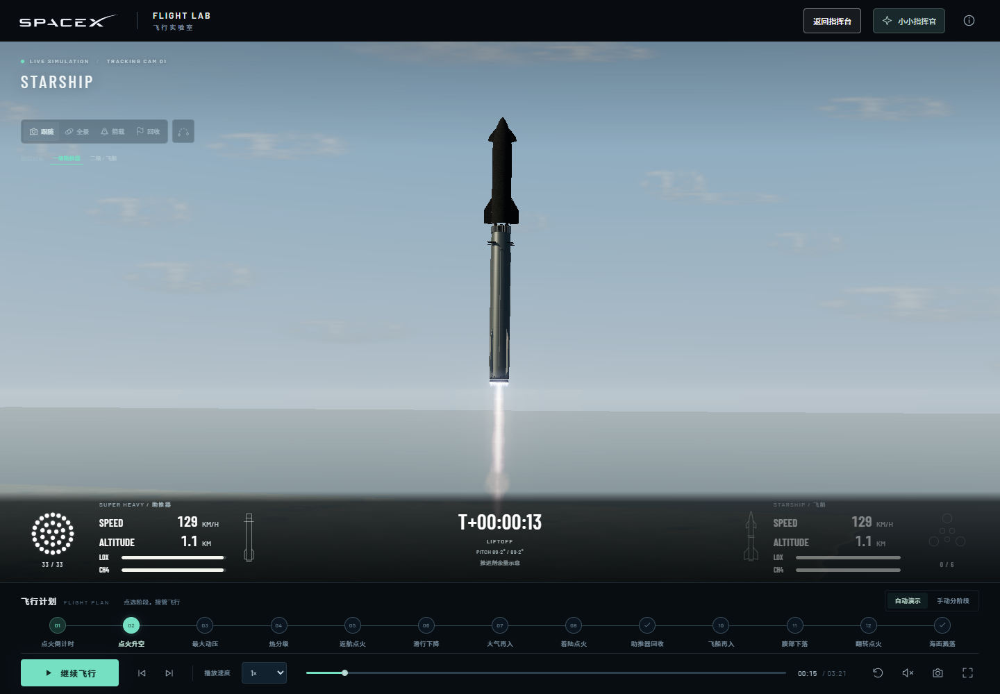
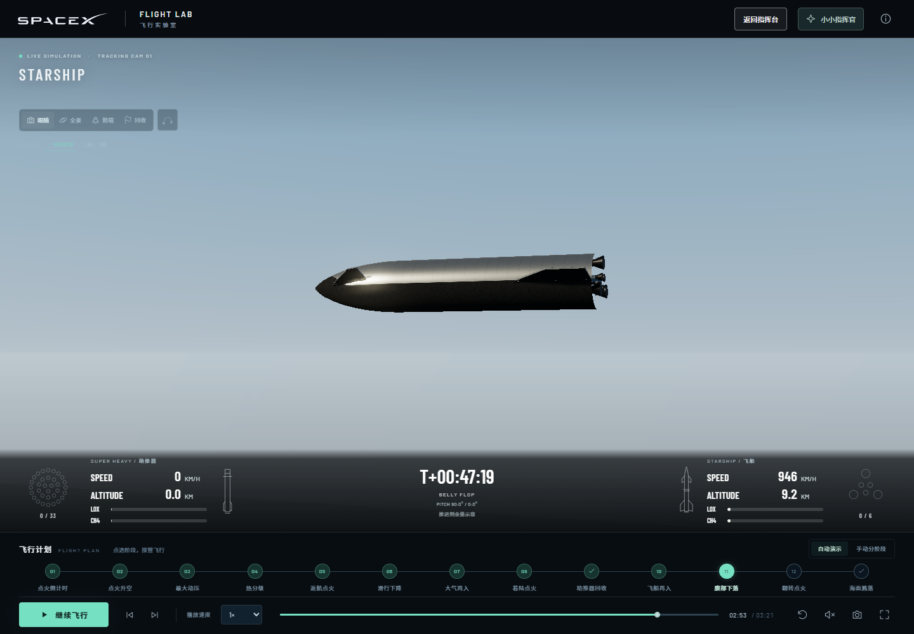

让结构和动作，都经得起近看。
本轮针对星舰襟翼、隔热瓦、猎鹰着陆腿与双级直播信息重新制作、运行检查。以下均为新版实际截图，点击可查看原尺寸。
64 个阶段组合、105 个主仪表采样点、96 个双级数据时刻通过检查；星舰完整连续播放至溅落。另检查四脚接地、瓦面朝下、翻转竖直、4 个检视模型和 8 个视角，以及手机和笔记本布局。
星舰前襟翼与隔热瓦
重做前襟翼的轮廓、偏置、厚度与铰链。六边形瓦片按曲面尺度排列，带有接缝与轻微色差。

背风侧的不锈钢表面
裸钢与黑色瓦面区分开，襟翼背面补充加强结构。采用 52 米飞船 / 72 米助推器参考尺寸；不混用最新 V3 构型。

猎鹰 9 号支腿展开
底部主腿、高位固定支点、多段伸缩杆和独立脚垫组成四腿结构。陆地与船甲板的四脚接触已检查。

双级直播信息条
参考用户提供的官方直播画面：左侧助推器、右侧飞船、中间时钟。分级前飞船侧变暗，分级后两边独立显示。

腹部下落与双级数据
星舰瓦面朝下，纵轴水平；已经回收的助推器保持关机。飞船返回时右侧继续显示独立遥测。
